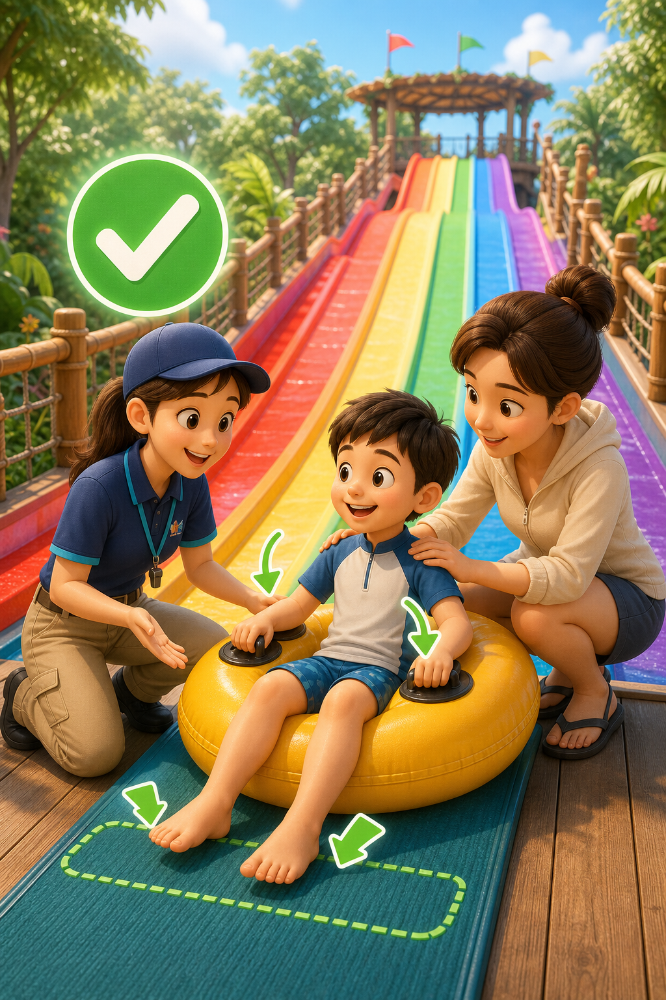
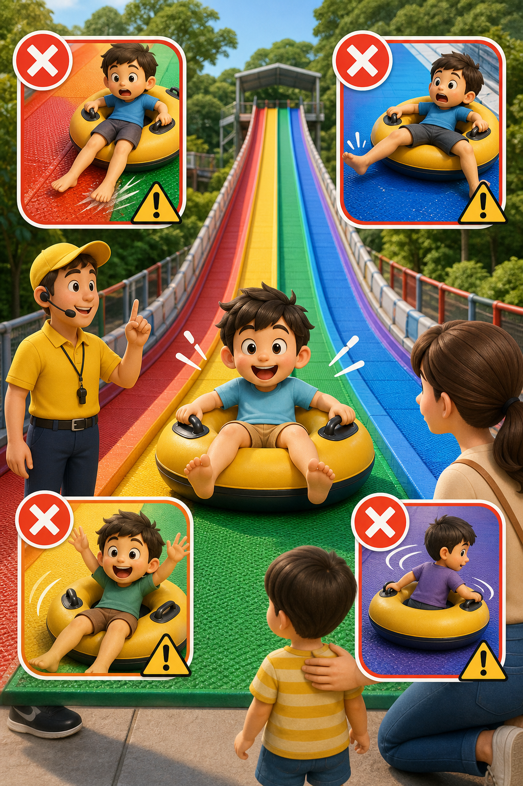
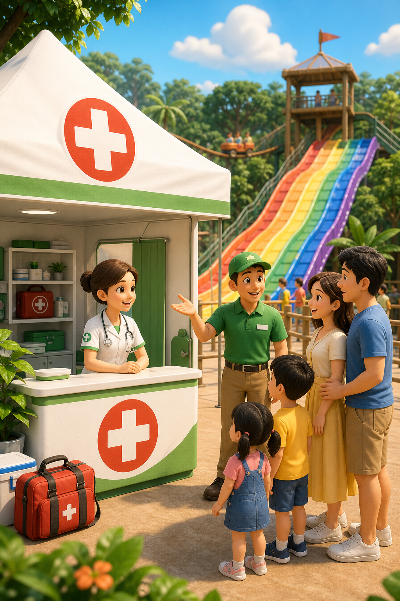
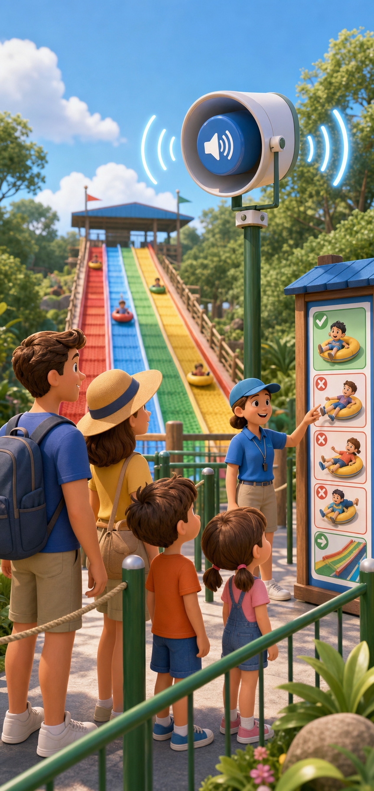
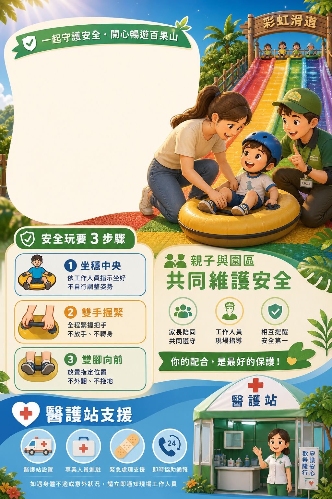
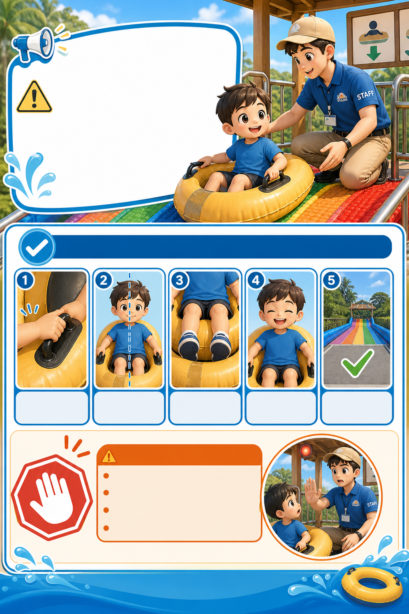
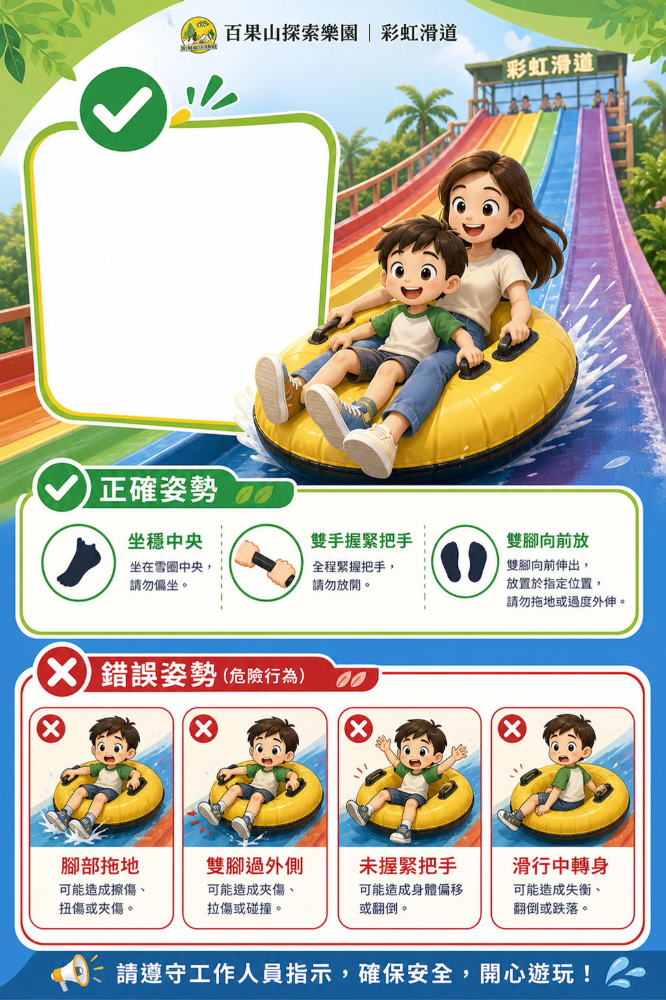

容易被解讀為推責
「園區概不負責」會讓家長認為園區只想規避責任，而不是優先守護孩子安全。
本次建議重點不是把責任單方面推給遊客，而是建立一套「搭乘前充分告知、現場確實確認、發生狀況能立即支援」的安全溝通系統。讓遊客在搭乘前理解規範與風險，也讓園區現場人員有一致的引導流程。

切結書可以作為補充，但不應成為主要溝通方式。對親子樂園來說，過度法律化的文字容易讓遊客感覺園區在推卸責任，反而提高負面情緒。
「園區概不負責」會讓家長認為園區只想規避責任，而不是優先守護孩子安全。
即使有簽署文件，若現場沒有清楚告示、員工確認與終點控場，仍會被認為管理不足。
以「已閱讀規範、願意配合、由工作人員確認後出發」取代生硬免責文字，接受度會更高。
建議把彩虹滑道安全溝通拆成四個接觸點，讓遊客在排隊前、排隊中、出發前、滑行後都接收到一致訊息。
用圖像說明正確姿勢、常見風險與搭乘前需接受的基本規範。
透過連續播放的大聲公提醒規則，讓遊客在等待時反覆聽到安全資訊。
工作人員以固定話術確認坐姿、手部、腳部與終點區狀態。
明確告知如有不適或意外狀況，可立即通知工作人員並由醫護站協助。
以下圖像呈現建議導入後的現場溝通方向，重點在於讓遊客在排隊、搭乘前與需要協助時，都能快速理解規範與支援方式。



以下為建議張貼於排隊區、出發平台與動線節點的告示樣式。正式製作前，建議依園區現場規範完成最後確認，確保文字、標點與實際執行方式一致。



建議納入排隊區語音提醒。語音提醒比單純告示更容易被接收，也能降低「不清楚規則」造成的溝通落差。執行時需維持親切語氣、清楚規則與適當播放頻率，避免干擾整體遊園體驗。
以下文案可錄成 30 至 40 秒版本，於排隊區循環播放。
流程設計的重點是讓「安全告知」不是只貼在牆上，而是落實到工作人員的每一組出發確認。
入口處張貼「遊樂設施有一定風險，請確認可接受並遵守規範後再遊玩」告示，搭配常見錯誤姿勢圖。
排隊區以大聲公或定向喇叭播放搭乘規則，讓等待遊客反覆接收正確姿勢與風險提醒。
每組出發前確認「坐穩中央、雙手握緊、雙腳向前、終點區清空」。未完成者先暫停出發並協助調整。
終點區需有清楚指引，提醒遊客滑下後立即離開，避免後方遊客碰撞或孩子在出口區逗留。
如有不適或受傷，工作人員先協助帶往醫護站，並留下時間、地點、設施、處理過程與後續關懷紀錄。
文字方向採用「清楚提醒」而非「強硬免責」，讓家長理解自身配合義務，同時保留園區主動管理與協助的形象。
若未來需要在粉絲頁或現場說明安全規範，建議語氣保持「提醒、照顧、共同維護」，避免直接指責遊客。
彩虹滑道是許多親子遊客喜歡的設施，為了讓大家玩得更安心，園區已加強搭乘前安全提醒、現場工作人員引導、終點區動線提醒與醫護站支援。也請家長陪同小朋友搭乘時，一起確認坐姿、把手與雙腳位置，遵守現場人員指示。大家多一分配合，就能讓孩子多一分安全。
若要先求快速落地，建議依照以下順序處理。
把正確姿勢、錯誤姿勢、常見風險與醫護站支援先放到現場。
用固定語音降低員工重複說明壓力，也讓遊客更難忽略規則。
讓每位員工在出發前用同一套標準確認，避免說法不一造成爭議。